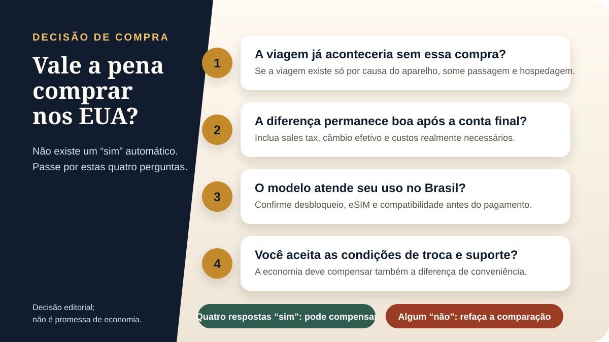

A etiqueta em dólar chama atenção, mas ela não responde sozinha se vale a pena comprar iPhone nos EUA. O comprador precisa comparar o mesmo modelo e armazenamento, calcular o imposto no endereço da compra e converter o total pela taxa realmente paga. Só então faz sentido colocar o preço brasileiro do outro lado.
Este guia é uma página de decisão. Compatibilidade, eSIM, desbloqueio, garantia e alfândega aparecem no nível necessário para a conta, com links para os guias especializados. Assim, você consegue decidir sem transformar uma pergunta simples em uma pesquisa confusa.
Quanto custa um iPhone nos EUA e no Brasil?
Em consulta realizada em 26 de agosto de 2026, a Apple mostrava os preços iniciais abaixo. São valores oficiais de entrada de cada linha, sem promoção de varejista. Nos Estados Unidos, o preço publicado ainda não inclui o sales tax. No Brasil, o preço mostrado é o valor de referência da Apple antes de eventuais condições comerciais.
| Linha consultada | Apple EUA, a partir de | Apple Brasil, a partir de |
|---|---|---|
| iPhone 17 Pro / Pro Max | US$ 1.099 | R$ 11.499 |
| iPhone Air | US$ 999 | R$ 10.499 |
| iPhone 17 | US$ 799 | R$ 7.999 |
| iPhone 17e | US$ 599 | R$ 5.799 |
| iPhone 16 / 16 Plus | US$ 699 | R$ 6.799 |
Como fazemos a comparação
Usamos os preços públicos da Apple EUA e Apple Brasil consultados na mesma data. Ao valor americano, acrescentamos o sales tax informado para o local da compra e usamos um câmbio efetivo, isto é, quanto cada dólar realmente custa depois das condições do meio de pagamento. Promoções temporárias não entram como preço oficial.
A comparação também separa custos objetivos de fatores pessoais. Preço e imposto podem ser calculados; já parcelamento, conveniência de troca, tolerância ao risco e valor da garantia dependem de cada comprador. Por isso, não existe uma faixa universal de economia que sirva para todas as famílias.
| Componente | Como verificar | Por que muda a decisão |
|---|---|---|
| Mesmo aparelho | Modelo, armazenamento e condição iguais | Evita comparar versões diferentes |
| Preço EUA | Apple ou varejista confiável no dia | Estoque e promoção variam |
| Sales tax | Carrinho ou endereço da loja | Não costuma estar na etiqueta |
| Câmbio efetivo | Banco, cartão ou conta usada | PTAX e cotação de buscador são referências, não o custo final |
| Preço Brasil | Valor real disponível no mesmo dia | Parcelamento e desconto podem mudar a comparação |
| Custos adicionais | Acessórios, deslocamento e eventual tributação | Podem reduzir a economia |
Como calcular o preço final do iPhone nos EUA
A fórmula prática é:
(preço nos EUA + sales tax) x câmbio efetivo + custos adicionais
versus
preço real disponível no Brasil
O sales tax não é uma porcentagem única para todo o país. Na Flórida, por exemplo, existe alíquota estadual geral de 6% e pode haver sobretaxa discricionária do condado. O endereço da compra determina a taxa aplicável, então confirme o total no carrinho ou no caixa.
Exemplo didático com o iPhone 17
Considere o preço inicial de US$ 799 consultado na Apple EUA e um sales tax hipotético de 7%. O total seria US$ 854,93. A tabela abaixo usa três câmbios efetivos apenas para mostrar quanto a conversão altera a conta. Esses números não são cotação nem oferta.
| Etapa | Câmbio efetivo R$ 5,00 | Câmbio efetivo R$ 5,50 | Câmbio efetivo R$ 6,00 |
|---|---|---|---|
| Preço Apple EUA | US$ 799,00 | US$ 799,00 | US$ 799,00 |
| Sales tax hipotético de 7% | US$ 55,93 | US$ 55,93 | US$ 55,93 |
| Total em dólar | US$ 854,93 | US$ 854,93 | US$ 854,93 |
| Total convertido | R$ 4.274,65 | R$ 4.702,12 | R$ 5.129,58 |
| Referência Apple Brasil | R$ 7.999 | R$ 7.999 | R$ 7.999 |
| Diferença antes de outros custos | R$ 3.724,35 | R$ 3.296,88 | R$ 2.869,42 |
Cartão, IOF e câmbio efetivo
Quem paga com cartão brasileiro deve consultar a regra do emissor, a taxa usada na conversão e os tributos aplicáveis. O Banco Central explica que a PTAX é uma referência e que as taxas ao consumidor são negociadas pelas instituições. Para comparar direito, use o valor final da operação, não apenas a cotação exibida em uma busca.
- Confirme limite e autorização para compra internacional antes da viagem.
- Compare cartão, conta global e outros meios pelo custo total, não por uma taxa isolada.
- Guarde recibo, comprovante de pagamento e número de série.
- Evite conversão dinâmica para reais sem comparar a taxa oferecida no caixa.
Quando comprar nos EUA começa a fazer sentido?
A resposta melhora quando você troca uma faixa arbitrária de economia por uma sequência de decisões. Uma diferença pequena pode ser suficiente para quem já está nos EUA e aceita pagamento à vista; a mesma diferença pode não compensar para quem valoriza parcelamento, devolução local e suporte mais previsível.
| Situação | Leitura prática |
|---|---|
| A viagem já aconteceria | O custo da passagem não precisa ser atribuído integralmente ao iPhone. |
| A viagem seria feita só para comprar | Passagem, hotel, transporte e tempo normalmente eliminam boa parte da vantagem. |
| A diferença final continua relevante | Os EUA podem fazer sentido após todas as verificações. |
| A diferença ficou pequena | Parcelamento, troca e suporte no Brasil podem valer mais. |
| Modelo, eSIM ou garantia geram dúvida | Não compre até confirmar as condições por escrito. |
| Aparelho está bloqueado ou vinculado a plano | A oferta não serve para quem pretende usar livremente no Brasil. |

Consulte ofertas somente depois da comparação
Transparência: os links abaixo são afiliados. O Família USA 1 pode receber comissão por compras qualificadas, sem custo adicional para você. Preço, vendedor e disponibilidade devem ser conferidos na página da oferta.
Compatibilidade, garantia e alfândega: o que pode mudar a resposta
Estes pontos não devem ocupar o lugar da conta, mas podem invalidar uma compra aparentemente barata. Use os resumos abaixo como filtro e abra o guia especializado quando houver dúvida.
O iPhone americano funciona no Brasil?
Em geral, um modelo compatível e desbloqueado pode funcionar no Brasil. Modelos vendidos nos EUA podem ter diferenças físicas e usar eSIM, e aparelhos associados a operadoras podem estar bloqueados. Confira o guia sobre usar um iPhone comprado nos EUA no Brasil, a explicação sobre eSIM do iPhone americano e o passo a passo para confirmar se o aparelho está desbloqueado.
A garantia vale no Brasil?
A Apple informa que opções de serviço podem variar por produto, país e região, e que o comprovante de compra pode ser solicitado. Não trate atendimento internacional como automático. Antes de pagar, leia o guia sobre garantia de iPhone comprado nos EUA e confirme as condições atuais diretamente com a Apple.
Posso trazer o aparelho ao voltar?
A Receita Federal analisa bagagem, bens de caráter manifestamente pessoal e compras sujeitas à cota conforme as circunstâncias. Um telefone usado durante a viagem não torna automaticamente qualquer aparelho adicional, novo ou lacrado isento. Consulte o guia sobre trazer iPhone dos EUA para o Brasil e as regras oficiais de bens do viajante antes do retorno.
Parcelamento e devolução também têm valor
O preço brasileiro pode incluir parcelamento, entrega local e devolução mais simples. Nos EUA, uma troca pode exigir presença na loja, prazo curto ou retorno ao país. Coloque esse risco na decisão, especialmente quando a diferença final não for grande para o seu orçamento.
Apple Store, Best Buy ou Amazon: onde comprar?
A melhor loja é aquela em que você consegue confirmar produto, condição, desbloqueio, vendedor e política de devolução. A Apple Store facilita a leitura das opções oficiais; grandes varejistas podem ter ofertas com condições específicas; marketplaces exigem atenção redobrada a quem vende e envia.
O comparativo Apple Store, Best Buy ou Amazon explica as diferenças sem transformar esta página em guia de loja. Também vale comparar iPhone dos EUA e do Brasil antes de escolher apenas pelo preço.
Checklist antes de comprar
- Comparar o mesmo modelo, armazenamento e condição.
- Registrar a data dos preços consultados.
- Confirmar o sales tax no endereço da compra.
- Usar o câmbio efetivo do meio de pagamento.
- Somar acessórios realmente necessários.
- Verificar se o aparelho é desbloqueado.
- Confirmar eSIM e compatibilidade com sua operadora.
- Ler garantia e política de devolução.
- Entender as regras de bagagem e declaração.
- Comparar com uma oferta brasileira real no mesmo dia.
Conclusão: comprar iPhone nos EUA vale a pena?
Pode valer a pena quando você já estará nos Estados Unidos, o preço final segue claramente abaixo da alternativa brasileira e modelo, desbloqueio, eSIM, garantia e retorno ao Brasil estão verificados. A vantagem não vem do número em dólar isolado; ela vem da conta completa.
Se a diferença diminuir depois de imposto e câmbio, comprar no Brasil pode ser a decisão mais racional pela facilidade de parcelar, trocar e buscar suporte. O melhor resultado não é pagar menos a qualquer custo, mas escolher com números atuais e riscos conhecidos.
Perguntas frequentes
Vale a pena comprar iPhone nos EUA?
Pode valer quando a viagem já está planejada e a diferença continua relevante depois de sales tax, câmbio efetivo e outros custos. Se a economia ficar pequena, parcelamento, troca e suporte no Brasil podem pesar mais.
O iPhone nos EUA é mais barato que no Brasil?
O preço inicial costuma ser menor em dólar, mas a comparação correta inclui imposto local, conversão, meio de pagamento e o preço brasileiro do mesmo modelo no mesmo dia.
Quanto custa um iPhone nos EUA?
Em 26 de agosto de 2026, a Apple EUA mostrava linhas atuais a partir de US$ 599, antes do sales tax. Preço, modelos e disponibilidade mudam; confirme a página oficial no dia da compra.
O preço da Apple nos EUA já inclui imposto?
Normalmente não. O sales tax costuma ser calculado de acordo com o endereço da compra e aparece no carrinho ou no caixa antes do pagamento.
Quanto é o sales tax na compra do iPhone?
Depende do estado e, em muitos locais, do condado ou da cidade. Na Flórida há alíquota estadual geral de 6% e pode existir sobretaxa local. Confirme a taxa exata no endereço da compra.
Preciso pagar imposto ao voltar ao Brasil?
Depende das circunstâncias, dos bens levados e das regras de bagagem aplicáveis. Consulte a Receita Federal; não presuma que qualquer aparelho novo ou adicional será automaticamente considerado de uso pessoal.
O iPhone comprado nos EUA funciona no Brasil?
Em geral pode funcionar se o modelo for compatível e estiver desbloqueado. Confirme eSIM, operadora, identificação do modelo e condição de desbloqueio antes de comprar.
A garantia do iPhone comprado nos EUA vale no Brasil?
As opções de serviço podem variar por produto, país e região. Guarde o comprovante e confirme as condições atuais com a Apple antes de decidir.
Fontes e data da revisão
Preços e orientações consultados em 26 de agosto de 2026. Verifique novamente antes da compra.
- Apple EUA - comprar iPhone
- Apple Brasil - comprar iPhone
- Florida Department of Revenue - sales tax e sobretaxas locais
- Banco Central do Brasil - conversor de moedas
- Banco Central do Brasil - cartão no exterior
- Receita Federal - bens do viajante
- Apple Support - serviço de garantia e comprovante de compra
Continue pesquisando antes da compra
Compare lojas, compatibilidade e regras de viagem com os guias específicos do Família USA 1.